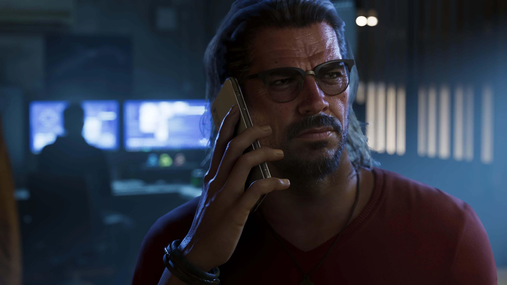
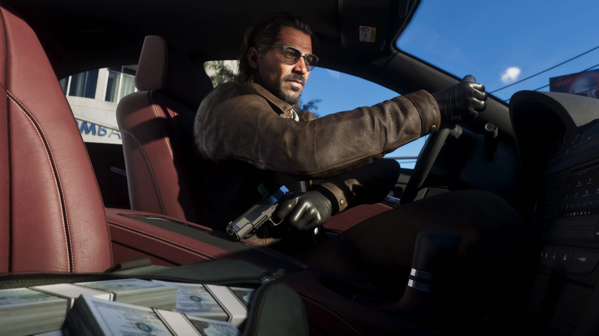

Experiência
Raul é apresentado oficialmente como um ladrão de bancos experiente.

Raul Bautista é um ladrão de bancos experiente apresentado oficialmente para Grand Theft Auto VI.
Confiança, charme e astúcia fazem parte de seu perfil. Raul está sempre à procura de pessoas dispostas a assumir os riscos que podem trazer as maiores recompensas.
A Rockstar apresenta Raul Bautista como um ladrão de bancos experiente. Seu perfil combina confiança, charme e astúcia com uma disposição constante para elevar as apostas.
Ele procura pessoas com talento que estejam prontas para assumir riscos maiores em troca de recompensas igualmente grandes.
A experiência é uma parte central de como Raul é apresentado. Ao mesmo tempo, sua imprudência faz com que cada novo golpe aumente ainda mais o nível de perigo para quem está ao seu lado.

A descrição oficial deixa claro que Raul não é um novato: ele já possui experiência como ladrão de bancos e procura pessoas capazes de acompanhar trabalhos em que o risco é parte do negócio.
A Rockstar também reforça a capacidade de adaptação do personagem. Raul é apresentado como alguém que confia na experiência, mas continua disposto a aumentar as apostas quando surge uma oportunidade.
Ainda não há confirmação oficial sobre missões específicas, bancos determinados ou sobre quais personagens formarão sua equipe durante a história.

A busca pelas maiores recompensas é uma característica central de Raul. Ele procura pessoas dispostas a aceitar riscos compatíveis com esse objetivo.
Mas esse comportamento também tem um lado perigoso. Segundo a apresentação oficial, a imprudência de Raul aumenta as apostas a cada novo golpe.
A própria Rockstar deixa a tensão clara: em algum momento, sua equipe terá de decidir se continua apostando mais alto ou se abandona a mesa.
Raul é apresentado oficialmente como um ladrão de bancos experiente.
Essas são características usadas pela Rockstar para definir seu perfil.
A imprudência de Raul aumenta as apostas a cada novo golpe.
Quatro screenshots oficiais de Raul Bautista publicados pela Rockstar Games.
Somente informações apresentadas oficialmente para o personagem.
Raul é apresentado como um ladrão de bancos experiente.
Ele procura pessoas com talento dispostas a assumir riscos em busca de grandes recompensas.
Confiança, charme e astúcia fazem parte da descrição oficial de Raul.
A apresentação do personagem reforça a ideia de que um profissional precisa se adaptar.
Raul busca trabalhos em que assumir maiores riscos possa trazer recompensas maiores.
Sua imprudência eleva as apostas a cada novo golpe.
As informações e imagens desta página são baseadas em materiais oficiais publicados pela Rockstar Games.
Página oficial que apresenta Raul Bautista, seu perfil e a descrição publicada pela Rockstar Games.
Ver perfil oficialBiblioteca oficial de mídia da Rockstar Games, que inclui quatro screenshots identificados como Raul Bautista.
Ver screenshots oficiais